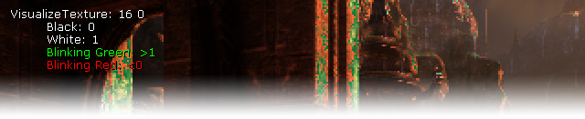

UDN
Search public documentation:
VisualizeTexture
日本語訳
中国翻译
한국어
Interested in the Unreal Engine?
Visit the Unreal Technology site.
Looking for jobs and company info?
Check out the Epic games site.
Questions about support via UDN?
Contact the UDN Staff
中国翻译
한국어
Interested in the Unreal Engine?
Visit the Unreal Technology site.
Looking for jobs and company info?
Check out the Epic games site.
Questions about support via UDN?
Contact the UDN Staff
UE3 Home > Post Process Effects > VisualizeTexture Command
VisualizeTexture Command

Overview
Usage
VisualizeTexture <TextureId> [<Mode>] [UV0/UV1/UV2] [BMP] [FRAC/SAT]: TextureId: 0 = <off> 1 = 330x222 FilterColor 2 = 1312x880 SceneColor 3 = 1312x880 SceneColorRaw 4 = 1312x880 SceneColorFixedPoint <INVALID> 5 = 1312x880 SceneDepthZ <INVALID> 6 = SmallDepthZ <INVALID> 7 = ShadowDepthZ <INVALID> 8 = DominantShadowDepthZ <INVALID> 9 = 400x400 TranslucencyShadowDepthZ <INVALID> 10 = ShadowDepthColor 11 = DominantShadowDepthColor 12 = 400x400 TranslucencyShadowDepthColor 13 = ShadowVariance <INVALID> 14 = 1312x880 LightAttenuation 15 = 656x440 TranslucencyBuffer 16 = 656x440 TranslucencyBuffer2 17 = 1312x880 TranslucencyDominantLightAttenuation 18 = 1312x880 AOInput 19 = 1312x880 AOOutput 20 = 1312x880 AOHistory 21 = 1312x880 VelocityBuffer 22 = QuarterSizeSceneColor <INVALID> 23 = 656x440 FogFrontfacesIntegralAccumulation <INVALID> 24 = 656x440 FogBackfacesIntegralAccumulation 25 = HitProxy 26 = FogBuffer <INVALID> 27 = 330x222 FilterColor2 28 = 1312x880 DoFBlurBuffer <INVALID> 29 = StereoFix 30 = LUTBlend 31 = TexturePoolMemory <INVALID> Mode (examples): RGB = RGB in range 0..1 (default) *8 = RGB * 8 A = alpha channel in range 0..1 A*16 = Alpha * 16 RGB/2 = RGB / 2 InputMapping: UV0 = view in left top (default) UV1 = full texture UV2 = view in left top with 1 texel border Flags: BMP = save out bitmap to the screenshots folder (not on console, normalized) FRAC = use frac() in shader (default) SAT = use saturate() in shader VisualizeTexture 0
The Visualization shader
Color coding
Known issues
- In D3D10 the on screen texture doesn't show up.
- Some textures don't show a size yet (Can be fixed easily in code but we might want to change that code anyway).
- When a texture cannot be displayed (e.g. INVALID) it simply doesn't show up - better would be some image that indicated the texture cannot be used
- Texture are often getting reused so looking at the buffer might only show the last usage. There are solution to this (e.g. index each reused, copy the data or prevent reuse) but those might have other side effects (e.g. more memory usage or alter the output).